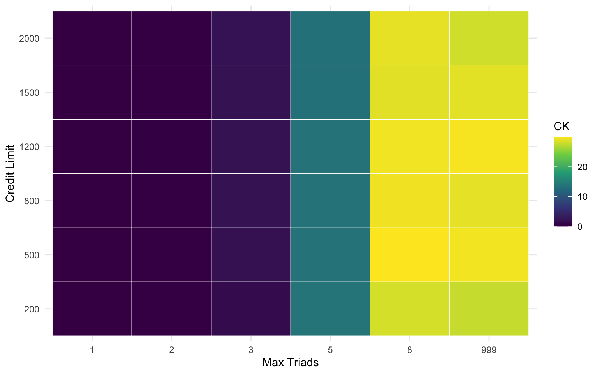
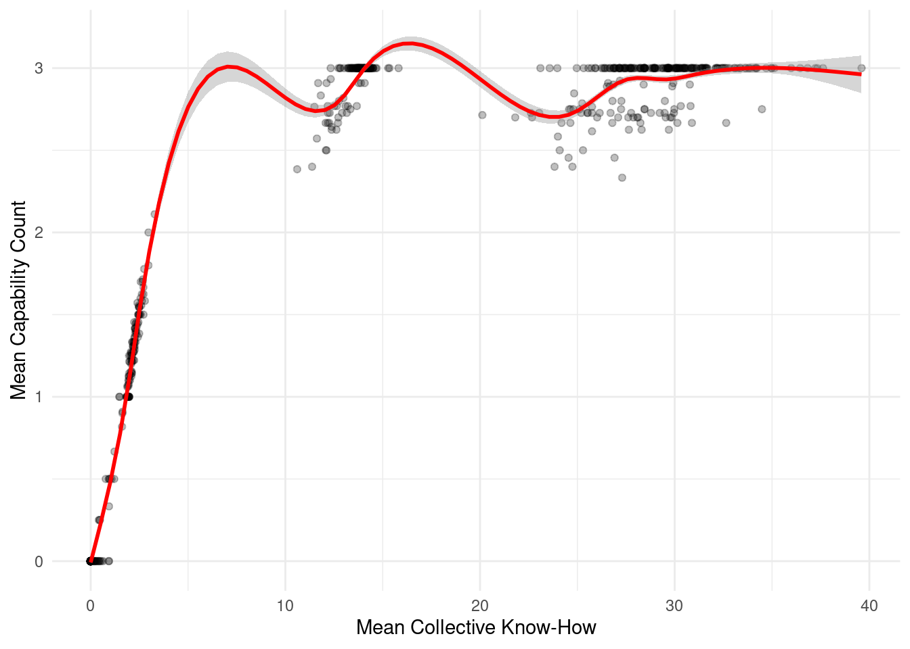
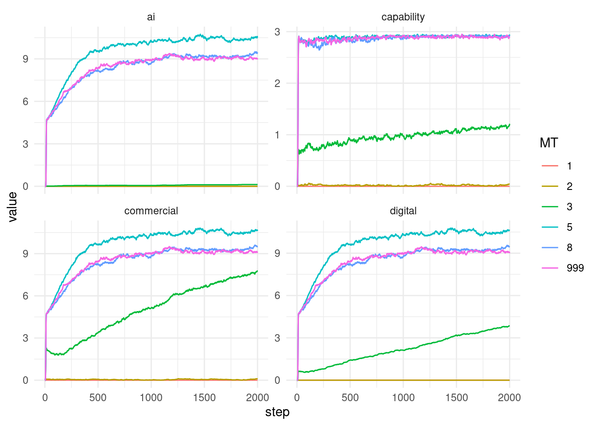
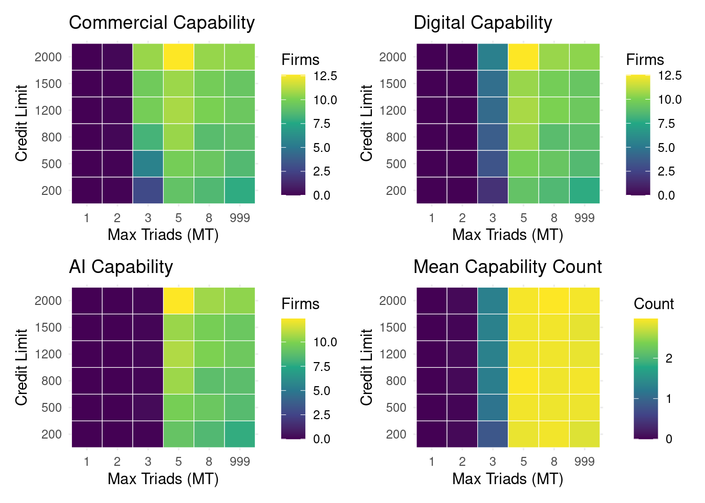
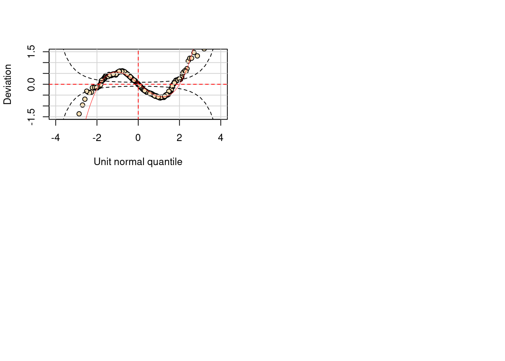
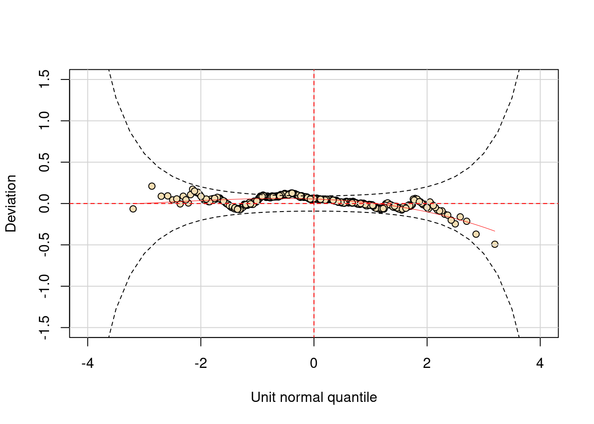
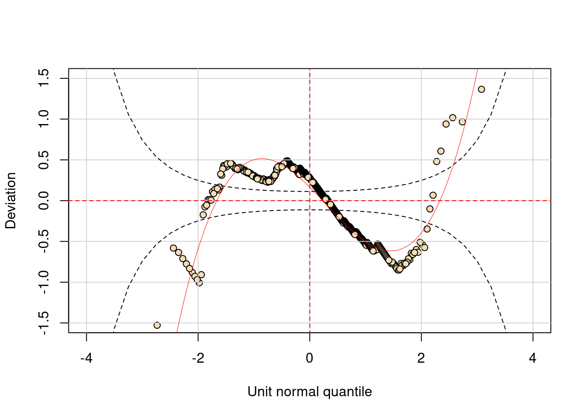
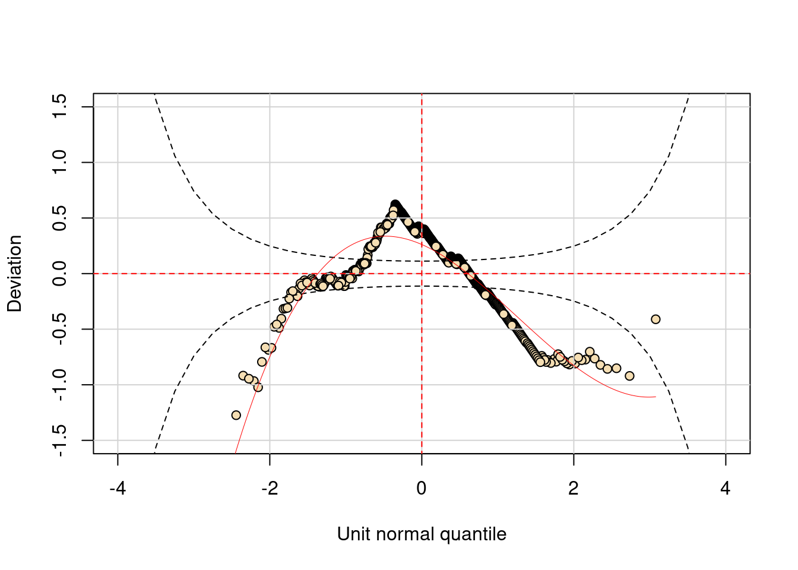

![]()
df_ss %>%
summarise(
Mean_CK = mean(mean.firm.ck),
SD_CK = sd(mean.firm.ck),
Min_CK = min(mean.firm.ck),
Max_CK = max(mean.firm.ck)
) %>%
kable(digits = 3)| Mean_CK | SD_CK | Min_CK | Max_CK |
|---|---|---|---|
| 12.29 | 12.882 | 0 | 39.6 |
Supplementary Material
This supplementary material provides the complete computational workflow, statistical diagnostics, and distributional estimations supporting the study “From Knowledge to Innovation Capabilities: An Agent-Based Exploration of Coordination and Credit Constraints.” It reproduces all descriptive trajectories, steady-state heatmaps, factorial ANOVAs, General Linear Model (GLM) assumption audits, and Generalized Additive Models for Location, Scale, and Shape (GAMLSS) reported in the main manuscript using the pre-processed simulation dataset from the VIRTECOM agent-based model.
Innovation capabilities, Economic Complexity, Agent-based modeling, Collective know-how
To ensure full reproducibility and streamline execution time, we load the curated longitudinal dataset generated by the VIRTECOM NetLogo simulation (data.RData), encompassing 1,440,720 simulation records across 720 independent runs (\(t \in [1, 2000]\)). We then extract the terminal cross-sectional snapshot at \(t = 2000\) (df_ss) representing quasi-stationary steady-state outcomes.
We organize our results in four subsections: 1) the emergence of collective know-how, 2) collective know-how as a microfoundation of innovation capabilities, 3) innovation capbility formation under cognitive and financial constraints, and 4) distributional heterogeneity and regime transitions.
df_ss %>%
summarise(
Mean_CK = mean(mean.firm.ck),
SD_CK = sd(mean.firm.ck),
Min_CK = min(mean.firm.ck),
Max_CK = max(mean.firm.ck)
) %>%
kable(digits = 3)| Mean_CK | SD_CK | Min_CK | Max_CK |
|---|---|---|---|
| 12.29 | 12.882 | 0 | 39.6 |
p_ck_time <- df_clean %>%
group_by(step, max.triads.per.worker) %>%
summarise(
CK = mean(mean.firm.ck),
.groups = "drop"
) %>%
ggplot(
aes(
step,
CK,
color = factor(max.triads.per.worker)
)
) +
geom_line(linewidth = .9) +
labs(
x = "Simulation Step",
y = "Mean Collective Know-How",
color = "MT"
) +
theme_minimal()
p_ck_time
p_ck_heatmap <- df_ss %>%
group_by(
max.triads.per.worker,
credit.limit.base
) %>%
summarise(
CK = mean(mean.firm.ck),
.groups = "drop"
) %>%
ggplot(
aes(
factor(max.triads.per.worker),
factor(credit.limit.base),
fill = CK
)
) +
geom_tile(color="white") +
scale_fill_viridis_c() +
labs(
x = "Max Triads",
y = "Credit Limit",
fill = "CK"
) +
theme_minimal()
p_ck_heatmap
fit_ck <- aov(
mean.firm.ck ~
factor(max.triads.per.worker) *
factor(credit.limit.base),
data = df_ss
)
summary(fit_ck) Df Sum Sq Mean Sq
factor(max.triads.per.worker) 5 116038 23208
factor(credit.limit.base) 5 40 8
factor(max.triads.per.worker):factor(credit.limit.base) 25 73 3
Residuals 684 3163 5
F value Pr(>F)
factor(max.triads.per.worker) 5018.886 <2e-16 ***
factor(credit.limit.base) 1.735 0.124
factor(max.triads.per.worker):factor(credit.limit.base) 0.633 0.918
Residuals
---
Signif. codes: 0 '***' 0.001 '**' 0.01 '*' 0.05 '.' 0.1 ' ' 1eta_squared(
fit_ck,
partial = TRUE
)# Effect Size for ANOVA (Type I)
Parameter | Eta2 (partial) | 95% CI
---------------------------------------------------------------------------------------
factor(max.triads.per.worker) | 0.97 | [0.97, 1.00]
factor(credit.limit.base) | 0.01 | [0.00, 1.00]
factor(max.triads.per.worker):factor(credit.limit.base) | 0.02 | [0.00, 1.00]
- One-sided CIs: upper bound fixed at [1.00].The results indicate that collective know‑how emerges primarily from cognitive coordination structures. Cognitive constraints explain nearly all observed variation in collective know‑how, whereas access to credit has negligible explanatory power.
p_ck_cap <- df_ss %>%
ggplot(
aes(
mean.firm.ck,
mean.capability.count
)
) +
geom_point(alpha=.25) +
geom_smooth(
method="gam",
color="red",
linewidth=1
) +
labs(
x="Mean Collective Know‑How",
y="Mean Capability Count"
) +
theme_minimal()
p_ck_cap`geom_smooth()` using formula = 'y ~ s(x, bs = "cs")'
Capability formation exhibits strong nonlinear threshold behaviour. Capability accumulation accelerates only after collective know‑how surpasses minimum coordination thresholds.
p_caps <- df_clean %>%
group_by(
step,
max.triads.per.worker
) %>%
summarise(
commercial =
mean(firms.with.commercial.capability),
digital =
mean(firms.with.digital.capability),
ai =
mean(firms.with.ai.capability),
capability =
mean(mean.capability.count),
.groups = "drop"
) %>%
pivot_longer(
commercial:capability,
names_to="metric",
values_to="value"
) %>%
ggplot(
aes(
step,
value,
color=factor(max.triads.per.worker)
)
) +
geom_line() +
facet_wrap(
~metric,
scales="free_y"
) +
labs(color = "MT") +
theme_minimal()
p_caps
crear_heatmap <- function(data, var_col, titulo_panel, leyenda_titulo) {
data %>%
group_by(
max.triads.per.worker,
credit.limit.base
) %>%
summarise(
val_mean = mean(.data[[var_col]], na.rm = TRUE),
.groups = "drop"
) %>%
ggplot(
aes(
x = factor(max.triads.per.worker),
y = factor(credit.limit.base),
fill = val_mean
)
) +
geom_tile(color = "white") +
scale_fill_viridis_c() +
labs(
title = titulo_panel,
x = "Max Triads (MT)",
y = "Credit Limit",
fill = leyenda_titulo
) +
theme_minimal()
}
p_hm_comm <- crear_heatmap(
df_ss,
"firms.with.commercial.capability",
"Commercial Capability",
"Firms"
)
p_hm_dig <- crear_heatmap(
df_ss,
"firms.with.digital.capability",
"Digital Capability",
"Firms"
)
p_hm_ai <- crear_heatmap(
df_ss,
"firms.with.ai.capability",
"AI Capability",
"Firms"
)
p_hm_cap <- crear_heatmap(
df_ss,
"mean.capability.count",
"Mean Capability Count",
"Count"
)(p_hm_comm | p_hm_dig) /
(p_hm_ai | p_hm_cap)
capability_vars <- c(
"firms.with.commercial.capability",
"firms.with.digital.capability",
"firms.with.ai.capability",
"mean.capability.count"
)
anova_results <- list()
effect_results <- list()
for(v in capability_vars){
fit <- aov(
as.formula(
paste(
v,
"~ factor(max.triads.per.worker) * factor(credit.limit.base)"
)
),
data=df_ss
)
anova_results[[v]] <- summary(fit)
effect_results[[v]] <- eta_squared(
fit,
partial=TRUE
)
}
effect_results$firms.with.commercial.capability
# Effect Size for ANOVA (Type I)
Parameter | Eta2 (partial) | 95% CI
---------------------------------------------------------------------------------------
factor(max.triads.per.worker) | 0.87 | [0.86, 1.00]
factor(credit.limit.base) | 0.21 | [0.16, 1.00]
factor(max.triads.per.worker):factor(credit.limit.base) | 0.25 | [0.18, 1.00]
- One-sided CIs: upper bound fixed at [1.00].
$firms.with.digital.capability
# Effect Size for ANOVA (Type I)
Parameter | Eta2 (partial) | 95% CI
---------------------------------------------------------------------------------------
factor(max.triads.per.worker) | 0.91 | [0.90, 1.00]
factor(credit.limit.base) | 0.15 | [0.11, 1.00]
factor(max.triads.per.worker):factor(credit.limit.base) | 0.11 | [0.04, 1.00]
- One-sided CIs: upper bound fixed at [1.00].
$firms.with.ai.capability
# Effect Size for ANOVA (Type I)
Parameter | Eta2 (partial) | 95% CI
---------------------------------------------------------------------------------------
factor(max.triads.per.worker) | 0.95 | [0.94, 1.00]
factor(credit.limit.base) | 0.12 | [0.08, 1.00]
factor(max.triads.per.worker):factor(credit.limit.base) | 0.13 | [0.07, 1.00]
- One-sided CIs: upper bound fixed at [1.00].
$mean.capability.count
# Effect Size for ANOVA (Type I)
Parameter | Eta2 (partial) | 95% CI
---------------------------------------------------------------------------------------
factor(max.triads.per.worker) | 0.97 | [0.97, 1.00]
factor(credit.limit.base) | 0.03 | [0.01, 1.00]
factor(max.triads.per.worker):factor(credit.limit.base) | 0.08 | [0.02, 1.00]
- One-sided CIs: upper bound fixed at [1.00].extract_anova <- function(var_name, data){
fit <- aov(
as.formula(
paste(
var_name,
"~ factor(max.triads.per.worker) * factor(credit.limit.base)"
)
),
data = data
)
aov_tab <- as.data.frame(
summary(fit)[[1]]
)[1:3, ]
eta_tab <- as.data.frame(
eta_squared(
fit,
partial = TRUE
)
)
tibble(
Outcome = var_name,
Effect = c(
"Max Triads (MT)",
"Credit Limit",
"MT × Credit"
),
Df = aov_tab$Df,
F = round(aov_tab$`F value`, 3),
p = signif(aov_tab$`Pr(>F)`, 3),
Eta2_p = round(
eta_tab$Eta2_partial,
3
)
)
}
outcomes <- c(
"mean.firm.ck",
"firms.with.commercial.capability",
"firms.with.digital.capability",
"firms.with.ai.capability",
"mean.capability.count"
)
anova_results <- purrr::map_dfr(
outcomes,
extract_anova,
data = df_ss
)
anova_results %>%
mutate(
Outcome = recode(
Outcome,
"mean.firm.ck" = "Collective Know-How",
"firms.with.commercial.capability" = "Commercial Capability",
"firms.with.digital.capability" = "Digital Capability",
"firms.with.ai.capability" = "AI Capability",
"mean.capability.count" = "Mean Capability Count"
),
p = ifelse(
p < .001,
"<0.001",
format(round(p,3), nsmall = 3)
)
) %>%
kable(
digits = 3,
caption =
"Factorial ANOVA and partial effect sizes for collective know-how and innovation capability outcomes"
)| Outcome | Effect | Df | F | p | Eta2_p |
|---|---|---|---|---|---|
| Collective Know-How | Max Triads (MT) | 5 | 5018.886 | <0.001 | 0.973 |
| Collective Know-How | Credit Limit | 5 | 1.735 | 0.124 | 0.013 |
| Collective Know-How | MT × Credit | 25 | 0.633 | 0.918 | 0.023 |
| Commercial Capability | Max Triads (MT) | 5 | 957.407 | <0.001 | 0.875 |
| Commercial Capability | Credit Limit | 5 | 36.147 | <0.001 | 0.209 |
| Commercial Capability | MT × Credit | 25 | 8.936 | <0.001 | 0.246 |
| Digital Capability | Max Triads (MT) | 5 | 1318.315 | <0.001 | 0.906 |
| Digital Capability | Credit Limit | 5 | 24.847 | <0.001 | 0.154 |
| Digital Capability | MT × Credit | 25 | 3.230 | <0.001 | 0.106 |
| AI Capability | Max Triads (MT) | 5 | 2555.043 | <0.001 | 0.949 |
| AI Capability | Credit Limit | 5 | 18.379 | <0.001 | 0.118 |
| AI Capability | MT × Credit | 25 | 4.236 | <0.001 | 0.134 |
| Mean Capability Count | Max Triads (MT) | 5 | 4509.019 | <0.001 | 0.971 |
| Mean Capability Count | Credit Limit | 5 | 4.057 | 0.001 | 0.029 |
| Mean Capability Count | MT × Credit | 25 | 2.257 | <0.001 | 0.076 |
df_ss %>%
summarise(
Firms = mean(number.of.firms),
Products = mean(count.products),
NetCapital = mean(mean.net.capital),
Debt = mean(sum.debt.of.firms)
) %>%
kable(digits=3)| Firms | Products | NetCapital | Debt |
|---|---|---|---|
| 6.983 | 22.113 | 7580.14 | 1278.344 |
Differences in coordination capacity not only affect capability formation but also generate distinct system-wide outcomes regarding firm survival, productive diversity and capital accumulation.
In order to evaluate whether previous results from a general linear model are valid or not, we now focus on examining the assumptions of the ANOVA
library(lmtest)Loading required package: zoo
Attaching package: 'zoo'The following objects are masked from 'package:base':
as.Date, as.Date.numericlibrary(car)Loading required package: carData
Attaching package: 'car'The following object is masked from 'package:dplyr':
recodeThe following object is masked from 'package:purrr':
somelibrary(moments)
auditar_glm <- function(var_name, data) {
fml <- as.formula(paste(var_name, "~ factor(max.triads.per.worker) * factor(credit.limit.base)"))
fit <- lm(fml, data = data)
res <- residuals(fit)
bp <- bptest(fit)
sw <- shapiro.test(res)
tibble(
Outcome = var_name,
Prop_Zeros = round(mean(data[[var_name]] == 0, na.rm = TRUE), 3),
Skewness = round(skewness(res), 3),
Kurtosis = round(kurtosis(res), 3),
BP_Stat = round(as.numeric(bp$statistic), 2),
BP_p = ifelse(bp$p.value < 0.001, "<0.001", format(round(bp$p.value, 3), nsmall = 3)),
SW_W = round(as.numeric(sw$statistic), 3),
SW_p = ifelse(sw$p.value < 0.001, "<0.001", format(round(sw$p.value, 3), nsmall = 3))
)
}
diagnosticos_glm <- purrr::map_dfr(outcomes, auditar_glm, data = df_ss)
diagnosticos_glm %>%
kable(caption = "Diagnostic tests of General Linear Model assumptions (Homoscedasticity and Gaussian residuals)")| Outcome | Prop_Zeros | Skewness | Kurtosis | BP_Stat | BP_p | SW_W | SW_p |
|---|---|---|---|---|---|---|---|
| mean.firm.ck | 0.310 | -2.820 | 47.788 | 59.72 | 0.006 | 0.707 | <0.001 |
| firms.with.commercial.capability | 0.335 | 0.366 | 7.215 | 213.78 | <0.001 | 0.904 | <0.001 |
| firms.with.digital.capability | 0.362 | 0.304 | 6.170 | 154.98 | <0.001 | 0.915 | <0.001 |
| firms.with.ai.capability | 0.482 | 0.058 | 9.229 | 135.01 | <0.001 | 0.861 | <0.001 |
| mean.capability.count | 0.335 | -2.855 | 40.153 | 82.70 | <0.001 | 0.712 | <0.001 |
As expected, these results show that our variables do not behave as a normal-like distribution, leading us to introduce GAMLSS estimation in our statistical comparisons.
library(gamlss)Loading required package: splinesLoading required package: gamlss.data
Attaching package: 'gamlss.data'The following object is masked from 'package:datasets':
sleepLoading required package: gamlss.distLoading required package: nlme
Attaching package: 'nlme'The following object is masked from 'package:dplyr':
collapseLoading required package: parallel ********** GAMLSS Version 5.5-5 ********** For more on GAMLSS look at https://www.gamlss.com/Type gamlssNews() to see new features/changes/bug fixes.# 1. Collective Know-How (CK): GLM Normal vs GAMLSS Zero-Adjusted Gamma (ZAGA)
m_ck_glm <- gamlss(
mean.firm.ck ~ factor(max.triads.per.worker) * factor(credit.limit.base),
family = NO(),
data = df_ss,
trace = FALSE
)
m_ck_gamlss <- gamlss(
mean.firm.ck ~ factor(max.triads.per.worker) * factor(credit.limit.base),
sigma.formula = ~ factor(max.triads.per.worker) + factor(credit.limit.base),
nu.formula = ~ factor(max.triads.per.worker),
family = ZAGA(),
data = df_ss,
trace = FALSE
)
# 2. Mean Capability Count en el régimen activo (MT >= 3, donde se supera el umbral de parálisis)
df_active <- df_ss %>% filter(max.triads.per.worker >= 3)
m_cap_glm <- gamlss(
mean.capability.count ~ factor(max.triads.per.worker) * factor(credit.limit.base),
family = NO(),
data = df_active,
trace = FALSE
)
m_cap_gamlss <- gamlss(
mean.capability.count ~ factor(max.triads.per.worker) * factor(credit.limit.base),
sigma.formula = ~ factor(max.triads.per.worker) + factor(credit.limit.base),
family = NO(),
data = df_active,
trace = FALSE
)
# 3. Tabla comparativa de bondad de ajuste (AIC y BIC)
comparacion_gamlss <- tibble(
Outcome = c("Collective Know-How (All regimes)", "Mean Capability Count (Active regime, MT >= 3)"),
GLM_Family = c("Gaussian Homoscedastic (NO)", "Gaussian Homoscedastic (NO)"),
GLM_AIC = round(c(AIC(m_ck_glm), AIC(m_cap_glm)), 1),
GLM_BIC = round(c(GAIC(m_ck_glm, k = log(nrow(df_ss))), GAIC(m_cap_glm, k = log(nrow(df_active)))), 1),
GAMLSS_Family = c("Zero-Adjusted Gamma (ZAGA)", "Gaussian Heteroscedastic (NO)"),
GAMLSS_AIC = round(c(AIC(m_ck_gamlss), AIC(m_cap_gamlss)), 1),
GAMLSS_BIC = round(c(GAIC(m_ck_gamlss, k = log(nrow(df_ss))), GAIC(m_cap_gamlss, k = log(nrow(df_active)))), 1)
)
comparacion_gamlss %>%
kable(caption = "Model selection comparison between Homoscedastic GLM (ANOVA) and Heteroscedastic/Zero-Adjusted GAMLSS")| Outcome | GLM_Family | GLM_AIC | GLM_BIC | GAMLSS_Family | GAMLSS_AIC | GAMLSS_BIC |
|---|---|---|---|---|---|---|
| Collective Know-How (All regimes) | Gaussian Homoscedastic (NO) | 3182.9 | 3352.3 | Zero-Adjusted Gamma (ZAGA) | 1925.6 | 2168.3 |
| Mean Capability Count (Active regime, MT >= 3) | Gaussian Homoscedastic (NO) | 152.4 | 256.7 | Gaussian Heteroscedastic (NO) | -159.4 | -21.6 |
# 4. Prueba formal de Razón de Verosimilitud (LRT) en el régimen activo
LR.test(m_cap_glm, m_cap_gamlss) Likelihood Ratio Test for nested GAMLSS models.
(No check whether the models are nested is performed).
Null model: deviance= 102.3923 with 25 deg. of freedom
Altenative model: deviance= -225.3751 with 33 deg. of freedom
LRT = 327.7674 with 8 deg. of freedom and p-value= 0 par(mfrow = c(2, 2))
wp(m_ck_glm, ylim.all = 1.5, main = "CK: GLM (Normal)")Warning in wp(m_ck_glm, ylim.all = 1.5, main = "CK: GLM (Normal)"): Some points are missed out
increase the y limits using ylim.all
wp(m_ck_gamlss, ylim.all = 1.5, main = "CK: GAMLSS (ZAGA)")
wp(m_cap_glm, ylim.all = 1.5, main = "Capabilities (MT>=3): GLM")Warning in wp(m_cap_glm, ylim.all = 1.5, main = "Capabilities (MT>=3): GLM"): Some points are missed out
increase the y limits using ylim.all
wp(m_cap_gamlss, ylim.all = 1.5, main = "Capabilities (MT>=3): GAMLSS")Warning in wp(m_cap_gamlss, ylim.all = 1.5, main = "Capabilities (MT>=3): GAMLSS"): Some points are missed out
increase the y limits using ylim.all
VEAMOS PUES